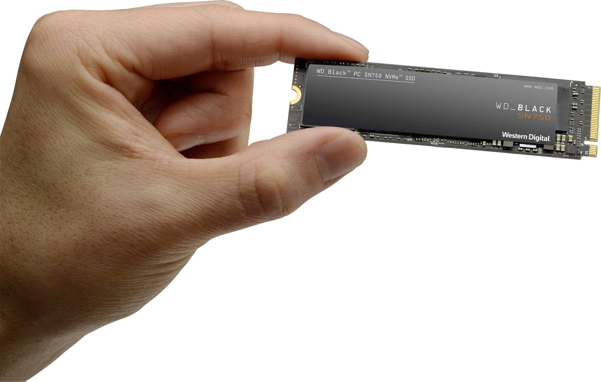
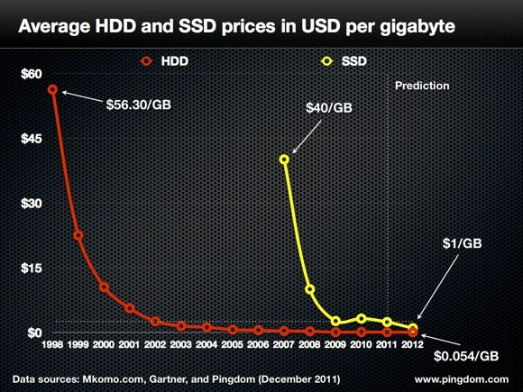

The SSD investment opportunity
For long-term value investors and entrepreneurs


Rereading the innovator dilemma highlighted this opportunity about investing in this technological change that is happening in the computer hard disk market. Solid State Disk is replacing HDD in both consumer and enterprise segments. The need in terms of data storage space is almost an ever-growing need due to the advent of Big data with enterprise collecting and storing large volumes of data for their AI and Machine learning systems. Of course, a big part of this data to be stored will be stored in the cloud what will make cloud providers like Microsoft, Amazon and Google, the mains and biggest consumers of data storage solutions but the demand from the consumer segment driven by personal computers will be a non-neglecting size. The price of the gigabyte of SSD is decreasing year over year and is being very close to the price of the gigabyte of HDD. (Apologies for the date of the chart but it’s for allowing you to see the trend)

For enterprises and cloud providers the price of the gigabyte will be a key metric of decision because they have to cut costs in order to be more efficient financially unless if real estate space is a scarce resource for them which may make them favoring SSD over HDD because SSD technology has more aerial density. But whatever we can say about the SSD market the key point is that this market is growing and will continue to do so like illustrated with this chart below.
Then if you are a long term value investor, it can be for you and me an opportunity to invest in a company specialized in manufacturing and selling SSD driven data storage solutions and you can also go up into the value chains of this technological change and invest in all the companies that participate into the manufacturing and selling of such kind of data storage solution.
if you are an entrepreneur looking for a niche market to start with you also can try to launch a startup specialized in providing SSD-driven storage solutions for financial institutions like HFT firms and Market Marking Firms. in terms of business model opportunity, I have not seen a company or a startup exploiting this niche market of financial firms that operate in high-frequency trading where storing and getting data faster is a key metric of success. A brilliant entrepreneur like you can target this niche and offer to these financial firms custom storage solutions driven by SSD technology like how GPU computation is being offered to them for fast computation of financial data.]
For my part, I do have a solution that uses SD cards as base ground components for building a new kind of storage solution but this solution will be way underperforming than HDD and SD. The innovator dilemma can be favorable to me with this solution that can be improved for reaching the upmarket performance need. But this is just an idea on the shelf like others that I have which all need a few amounts of funding for R&D. But the point of this article is not about me at all but about highlighting you an investment opportunity and an entrepreneurship one.
here is a test portfolio I have built with SeekingAlpha
Western Digital Corporation is my favorite pick. Let’s forget this portfolio and see what will happen in 1 to 3 years horizon. You can build your own using seeking alpha choosing the SSD manufacturer you want and you can find these SSD manufacturers here.
PS: I am still working on the valuations articles to be published on SeekingAlpha that I have promised you in this article about a new valuation model based on user attention. Just yesterday I was getting data as illustration resources for these articles. Please forgive my slowness, it just happens that resources are scarce for me. I mean financially then I don't need to tell you that I hold any position in these stocks above. But let me just tell it: I don't own any amount of share of these stocks above.